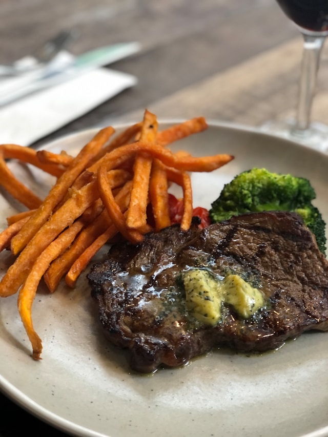

Parisian-Style Steak Frites

Ingredients
- 1 teaspoon vegetable oil, or as needed
- 2 hanger steaks
- 2 tablespoon minced shallot
- 1/4 cup dry wine
- 1/4 cup beef broth
- 2 anchovy fillets, chopped, or more to taste
- 3 tablespoon butter
- 1 tablespoon minced fresh parsley
- 1 tablespoon minced fresh chervil
- 1 teaspoon minced fresh thyme
Steps
- Heat oil over medium heat. Cook steaks
- Place shallots about 2min, pour wine and a broth, whisk butter gradually. Stir parsley, chervil and thyme.
- Cut steaks into slices across the grain, spoon sauce over slices
Home